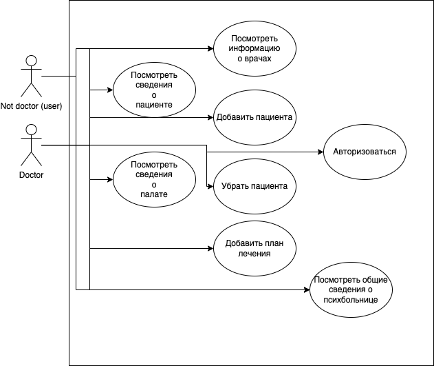
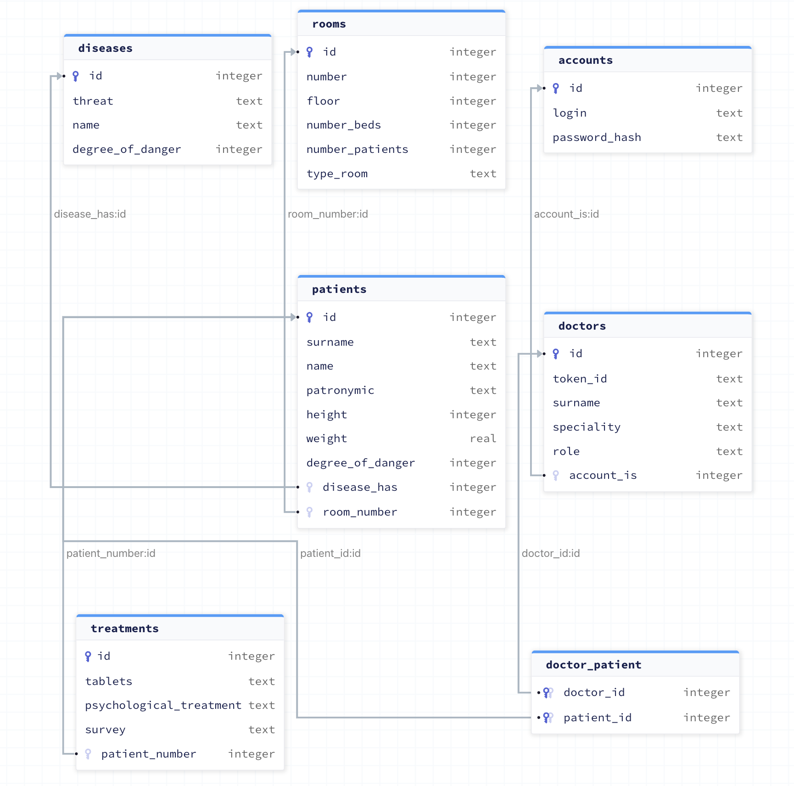

Лабораторная работа 1
Название
Псих-Админ
Цель
Данная система администрирования предназначена для работы с пациентами.
Проект создан для персонала психбольниц.
Данная система будет содержать информацию о пациетах, заболеваниях и плана лечения.
Use-Case

ER

BD

Пользовательские сценарии
Пользователь открывает клиент и может:
- Посмотреть информацию о себе
- Добавить пациента к себе
- Перестать быть лечащим врачом пациента
- Посмотреть сведения о палате
- Изменить сведения пациента
- Посмотреть сведения пациента
- Посмотреть доступные сценарии
- Авторизация
- Вывести всех пациентов больници
Формализация бизнес-правил, BPMN-диаграмма

Верхнеуровневое разбиение на компоненты

Экраны будущего приложения
Страница Главная:

Страница Врача:

Страница Пациента: